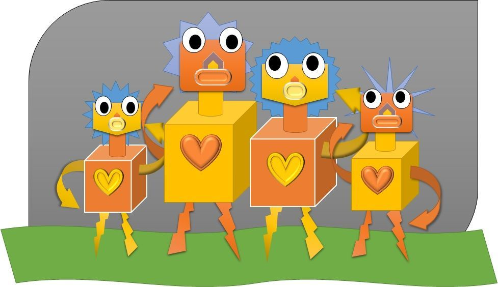

Чему пока детей не учат в Школе🎧
Говорим про то, чему пока детей не учат в школе*1См. также: Голос Высокой Травы, sites.google.com/view/golos-travy
А может уже не учат в школе?
Раньше школы были церковные. Много ли это кому помогло.
Люди могут извратить любые духовные знания.
Поэтому знания должны быть доступны для желающих, кто к ним готов.
Дон Хуан бы с тобой не согласился. Он, отвечая на вопрос КК о том, можно ли развить у детей "сразу" второе внимание, говорил, что да - если они растут "в среде новых видящих". На самом деле речь о механизмах и свойствах "эргрегора", к которому "присоединяется" ребенок при рождении в этот мир, и с которым соединяется осознанно в период полового взросления. Сейчас его свойства и опосредованные ими механизмы таковы, что человека невозможно воспитать "сразу" "магом и видящим". Он обязан стать сначала средним человеком, а потом сам принять решение и переучиться в воина, а потом (если сильно повезет) то и "человеком знания". Но нужно понимать, что Орел не делает Свой "Дар" какой-то "избранной" кучке индейцев, а делает Его сразу всему человечеству. А из этого следует неизбежность того, что это положение дел со временем будет меняться. И оно уже меняется. Современные маги своими Путями опосредуют работу эргрегорных механизмов, которые сделают возможным для детей в период полового взросления взрослеть не только в "физическом", но и в "магическом" смысле сразу и одновременно. Посредством "получения" определенной "посылки", оставленной для них во "втором внимании" их предшественниками. Не буду вдаваться в подробности (к тому же, большинство из того, что мне известно, уже было изложено в тех или иных местах*2Полный Архив материалов на proza.ru/avtor/agent017.). К тому же, разумеется, я сам не могу знать подробности, а могу знать только общие черты, которые уже известны сейчас, в связи с тем исключительно, что часть этого действия обязана производиться загодя, предшествующими поколениями. А все, что производится человеком лично "в сотрудничестве" с Намерением Духа и по Его "указке" и Воле, "запечатлевается" у человека в опыте в виде "безмолвного знания" о той "магической ступени", с которой он взаимодействовал. Но настоящую форму "пробужденных детей Будущего мира" будут знать, по большому счету, только сами эти дети посредством своего происхождения с ними опять же лично в жизненном опыте. Но я могу сказать кое что уместное в этом отношении не из "будущего", а из "прошлого". Кэрол Тиггс, говоря Кастанеде "сновидить меня в будущее, намеревай меня в будущее", после "близкого знакомства" с Женщиной в церкви, имела в виду именно ЭТО будущее, и именно ЭТО действие, т.е. опосредование своим "вторым вниманием" "рождение во втором внимании" детей Будущего этого мира.
▶ Hi-Fi — А мы любили ↗
Примечания
- См. также: Голос Высокой Травы, sites.google.com/view/golos-travy ↩
- Полный Архив материалов на proza.ru/avtor/agent017. ↩